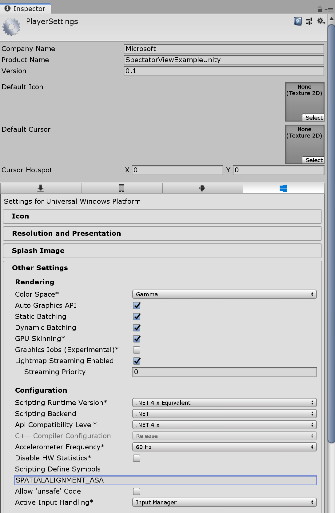
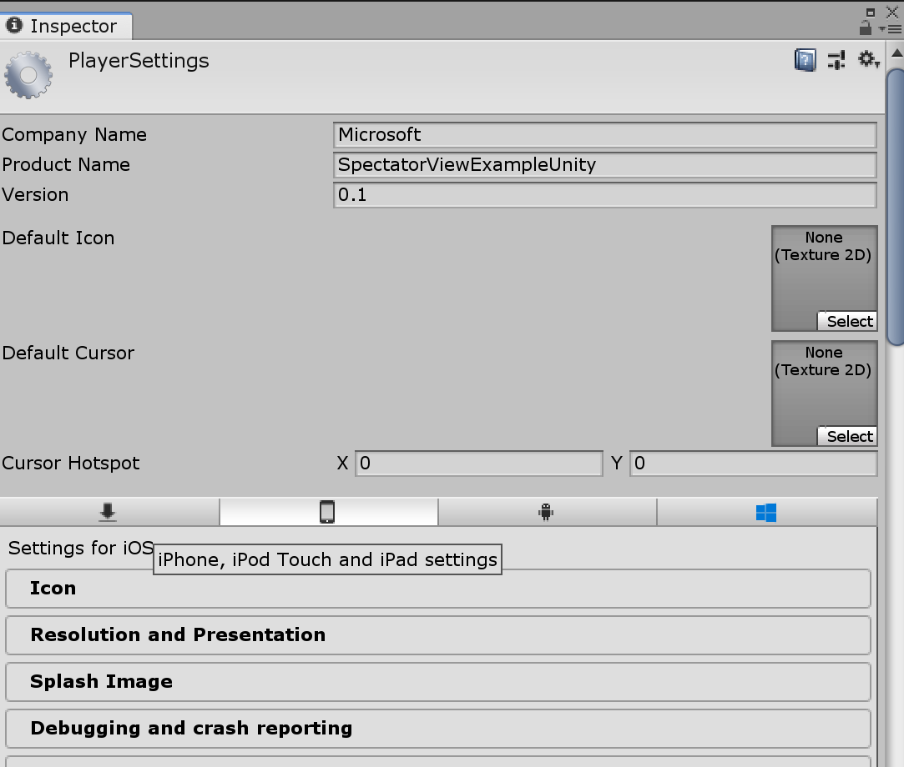
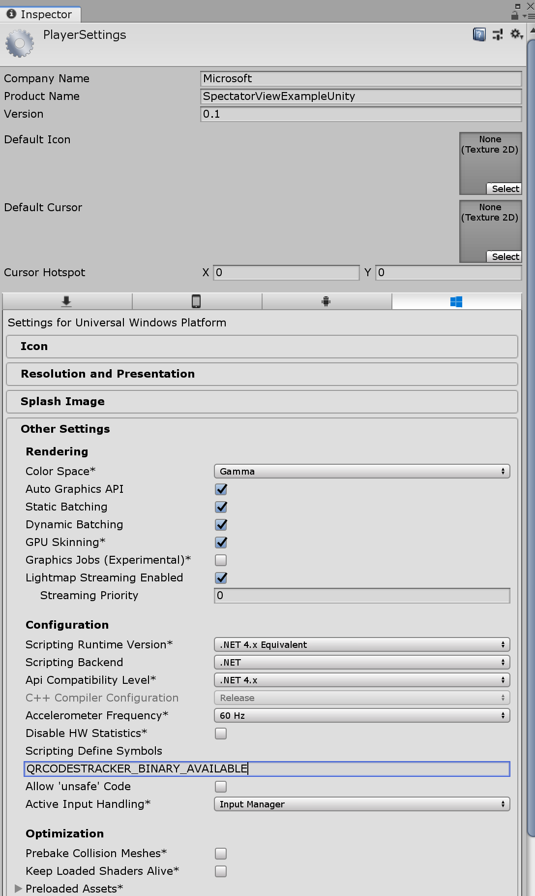
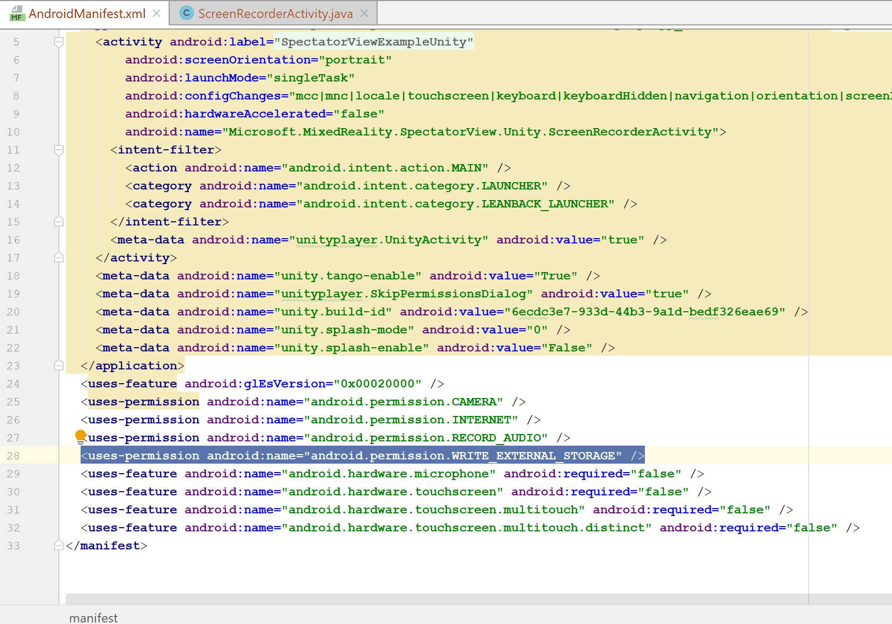
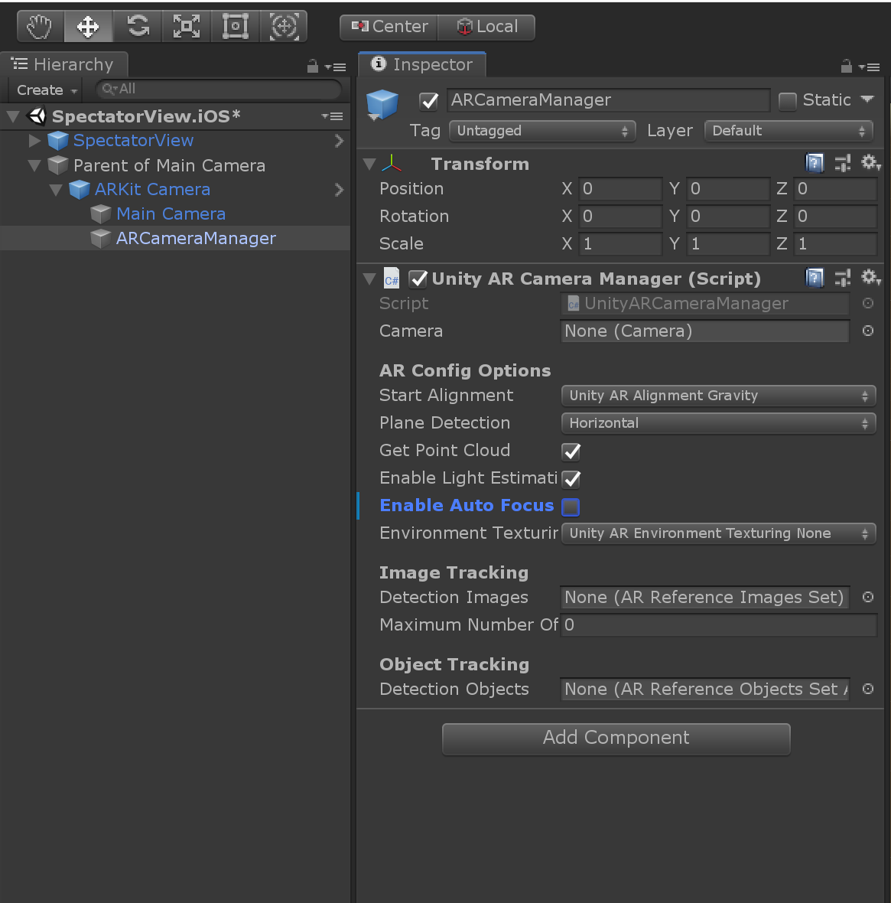

Spectator View Mobile Setup
To setup spectator view with a video camera, see here.
Software & Hardware Requirements
Note: Spectator View does not currently support Unity's ARFoundation package. For Android and iOS experiences, Spectator View requires using ARCore and ARKit.
HoloLens 2 & HoloLens Requirements
- Windows PC
- HoloLens 2 or HoloLens
- Visual Studio 2017 installed on the PC
- Windows 10 SDK (10.0.18362.0)
- Unity installed on the PC
Android Requirements
- Windows PC
- Android Device that supports AR Core
- Android Studio
- Obtain ARCore v1.7.0 (Note: only v1.7.0 has been tested, use other versions at your own risk). This can be achieved by running the
tools/Scripts/SetupRepository.batscript as an administrator or by manually copying assets content into a ARCore-Unity-SDK folder in the external directory. - Unity installed on your development device with Android build support. This module can be included when first installing Unity, or you can use Unity Hub to add the module after installing.
- If building with IL2CPP, a specific Android NDK may be required (Unity 2018.3.14f1 required r16b). Older NDK's can be found here.
Note: ARCore does not share MixedReality-SpectatorView's MIT license. For more information on ARCore licensing, see here.
iOS Requirements
Note: ARKit contains some scripts that will generate build failures for HoloLens builds. You will only need to obtain the ARKit Unity Plugin described below on your mac device.
- Mac
- ARM64 iOS Device that supports AR Kit
- Unity installed on the Mac with iOS build support. This module can be included when first installing Unity, or you can use Unity Hub to add the module after installing.
- XCode installed on the Mac
- Obtain an apple developer license
- Obtain Unity's ARKit Plugin and place it within the
external/ARKit-Unity-Pluginfolder.
Note: Unity's ARKit Plugin has two licenses, one of which is not a MIT license. For more information on ARKit licensing, see here.
Preparing your project
To use the Spectator View codebase, its suggested to clone and reference the MixedReality-SpectatorView repository through symbolic linked directories in your Unity project. Before beginning on the steps below, go through the repository setup process here. This will ensure that the Unity editor components referenced below exist in your project.
Spatial Alignment Strategy Dependencies
Spectator View requires multiple devices understanding a shared application origin in the physical world. In order to establish this shared application origin, you will need to choose and use a spatial alignment strategy. Different dependencies are needed for different strategies. For more information on spatial alignment strategies, see here.
Not all spatial alignment strategies support all platforms. See the chart below to determine which strategy best addresses your intended user scenarios.
| Platform Support | HoloLens 2 | HoloLens 1 | Android | iOS |
|---|---|---|---|---|
| Azure Spatial Anchors | x | x | x | x |
| QR Code Detection | x | x | x | |
| ArUco Marker Detection | x | x | x |
Azure Spatial Anchors
- Setup an Azure Spatial Anchors account and obtain an
Account IDandPrimary Key. - Obtain AzureSpatialAnchors v1.1.1. This can be achieved by running the
tools/Scripts/SetupRepository.batscript as an administrator or by manually copying assets content into theexternal/Azure-Spatial-Anchors-Samplesfolder. - Add the
SPATIALALIGNMENT_ASApreprocessor directive to your Universal Windows Platform Player Settings (This is located via Build Settings -> Player Settings -> Other Settings -> 'Scripting Defined Symbols')

- Add the
SPATIALALIGNMENT_ASApreprocessor directive to your Android Player Settings (This is located via Build Settings -> Player Settings -> Other Settings -> 'Scripting Defined Symbols'). Be sure to pick the Android tab in the Player Settings.
Note: If the Android Player Settings don't exist as an option, you may need to install the Android Build tools for Unity. For instructions on how to do this, see here.

- Add the
SPATIALALIGNMENT_ASApreprocessor directive to your iOS player settings (This is located via Build Settings -> Player Settings -> Other Settings -> 'Scripting Defined Symbols'). Be sure to pick the iOS tab in the Player Settings.
Note: If the iOS Player Settings don't exist as an option, you may need to install the iOS Build tools for Unity. For instructions on how to do this, see here.

- Create a
SpectatorViewSettingsprefab by calling 'Spectator View' -> 'Edit Settings' in the toolbar.

- Add a
SpatialAnchorsCoordinateLocalizationInitializerto this SpectatorViewSettings prefab. Update the Account ID and Account Key to be the Account ID and Primary Key values that you obtained in step 1. - Update the
SpatialLocalizationInitializationSettingsPrioritized Initializers list to reference theSpatialAnchorCoordinateLocalizationInitializeryou created.

Note: Use of an Account Id and Account Key can accelerate your development process. However, hardcoding these values into your application isn't a safe practice and should be avoided for enterprise deployed solutions. For your end application, its suggested to use an Access or Authentication token. More information on how to setup and use AAD tokens with ASA can be found here.
Azure Spatial Anchors on iOS
If you are building Azure Spatial Anchors on iOS, you will need to take some additional steps after generating your XCode project through Unity. After exporting an iOS version of your application in Unity, do the following:
- In the terminal, navigate to your xcode project folder.
- Run
'pod install --repo-update'in the terminal when in your xcode project folder. - Open and compile your application using the xcode workspace. Do NOT use the xcode project.
Note: Failing to take the above steps may result in errors such as 'Undefined symbols for architecture arm64' and 'framework not found Pods_Unity_iPhone' For more information on building ASA for iOS in Unity see here.
QR Code Detection
- Download the QR APIs Nuget Package releases.zip folder and extract its contents into the
external/MixedReality-QRCodePluginfolder. - Build an x86 Release version of SpectatorView.WinRTExtensions.dll and include the associated dll's in your Unity project. Adding the plugins to your Unity project can be achieved by running the
tools/Scripts/CopyPluginsToUnity.batscript. - In the WSA Unity player settings, add the
QRCODESTRACKER_BINARY_AVAILABLEpreprocessor directive. (This is located via Build Settings -> Player Settings -> Other Settings -> 'Scripting Defined Symbols')

ArUco Marker Detection
Build an x86 Release version of SpectatorView.OpenCV.dll and SpectatorView.WinRTExtensions.dll (see instructions here) and include the associated dll's in your Unity project.
Add the plugins to your Unity project by running the
tools/Scripts/CopyPluginsToUnity.batscript. This will add an empty SpectatorView.OpenCV.dll (and dependencies) for the ARM build flavor, which prevents HoloLens 2 build errors.
Building & Deploying
Before Building
- Obtain your HoloLens's ip address from its windows settings menu via Settings -> Network & Internet -> Wi-Fi -> Hardware Properties.
- Add any of the preprocessor directives or Unity packages described above that you intend to use to your clone of the SpectatorView codebase.
- If you would like to synchronize Text Mesh Pro UI, you will need to add the
STATESYNC_TEXTMESHPROpreprocessor directive to the UWP, iOS and Android Player Settings (This is located via Build Settings -> Player Settings -> Other Settings -> 'Scripting Defined Symbols'). - Open the
SpectatorView.HoloLensscene in your Unity project. - In the Unity editor, call 'Spectator View -> Update All Asset Caches' (This will be located in the Unity editor toolbar) to prepare content for state synchronization. Add the Generated.StateSynchronization.AssetCaches folder to your project's repository to share across development devices.

Note: Asset Caches need to be updated on one development machine and shared across development machines. Asset Caches aren't currently created in a deterministic manner and can't be recreated in new development environments. The easiest way to share this with a team is to commit changes to the Generated.StateSynchronization.AssetCaches folder that will appear in the Unity project's Assets directory. For more information on Asset Caches see SpectatorView.StateSynchronization.
HoloLens 2 & HoloLens
- Make sure your Unity project contains the asset caches that were created in the 'Before building' steps.
- Open the project scene that you intend to use with SpectatorView.
- Add the
SpectatorViewprefab to the scene. - Setup your scene to synchronize content. You can either have all content synchronized by checking 'Automatically Broadcast All Game Objects' in BroadcasterSettings located in your SpectatorViewSettings prefab. Or, you can manually add GameObjectHierarchyBroadcaster components to all parent game objects in the scene that you want synchronized.

- Press the 'HoloLens' button on the
Platform Switcherattached to Spectator View in the Unity inspector (This should configure the correct build settings and app capabilities). - Build and deploy the application to your HoloLens device.
Android
- Make sure your Unity project contains the asset caches that were created in the 'Before building' steps.
- Make sure that you have a reference to ARCore v1.7.0 in your project. This can be achieved by running the
tools/Scripts/SetupRepository.batscript as an administrator or by downloading and importing the package from ARCore v1.7.0. - Open the
SpectatorView.AndroidUnity scene. - Press the 'Android' button on the
Platform Switcherattached to Spectator View in the Unity inspector (This should configure the correct build settings and app capabilities). - Check 'ARCore Supported' under 'Build Settings -> Player Settings -> Android -> XR Settings' from the Unity editor toolbar.
- Export your project to Android Studio. Be sure to declare the SpectatorView.Android scene as the scene included. If SpectatorView.Android does not exist in your list of scenes to choose from in the build settings, open the scene in the Unity editor. Then reopen the build settings and press 'Add Open Scenes'.

- Update the AndroidManifest.xml in Android Studio to use the
Microsoft.MixedReality.SpectatorView.Unity.ScreenRecorderActivityclass compared to the UnityPlayerActivity as the application activity.

- Update the AndroidManifest.xml in Android Studio to contain
android.permission.CAMERA,android.permission.INTERNET,android.permission.RECORD_AUDIOandandroid.permission.WRITE_EXTERNAL_STORAGEuses-permissions.

- Build and deploy the application through Android Studio to your desired device. If it is a new Android development device, you may need to enable developer options and debugging. For information on setting up your Android device for debugging, see here.
iOS
Note: Building iOS applications requires a mac.
- Make sure your Unity project contains the asset caches that were created in the 'Before building' steps. Asset caches can't be recreated in new development environments, so the asset caches created on the PC need to be checked in or copied over to your mac development environment.
- Import Unity's ARKit Plugin to your Unity project. To do this, download the source code from the provided link. You can then add the source code to the
external/ARKit-Unity-Pluginfolder. Thetools/Scripts/AddDependencies.batscript should have added a symbolic link to this folder to your project when setting things up. - Open the
SpectatorView.iOSUnity scene. - Press the 'iOS' button on the
Platform Switcherattached to Spectator View in the Unity inspector (This should configure the correct build settings and app capabilities). - Export the iOS project to a XCode solution. Be sure to include the SpectatorView.iOS scene. If SpectatorView.iOS scene does not exist in your list of scenes to choose from in the build settings, open the scene in the Unity editor. Then reopen the build settings and press 'Add Open Scenes'.
- Configure the signing certificate for your Unity generated project in XCode to reflect your developer account.
- Build and deploy the application through XCode to your desired device (See the below steps if using ASA).
iOS with Azure Spatial Anchors
- In the terminal, navigate to your xcode project folder.
- Run
'pod install --repo-update'in the terminal when in your xcode project folder. - Open and compile your application using the xcode workspace. Do NOT use the xcode project.
Note: Failing to take the above steps may result in errors such as 'Undefined symbols for architecture arm64' and 'framework not found Pods_Unity_iPhone' For more information on building ASA for iOS in Unity see here.
Example Scenes
If you would like to try out an example before setting up your own application to work with spectator view, run tools/Scripts/SetupRepository.bat as an administrator. Then, open the samples/SpectatorView.Example.Unity project. You can then build and deploy the following scenes:
- HoloLens:
SpectatorView.HoloLens - Android:
SpectatorView.Android - iOS:
SpectatorView.iOS
Customizing UI
Spectator View contains some ability for customizing UI. For more information, see here.
Troubleshooting
Issue: DirectoryNotFoundException: Could not find a part of the path "*.asmdef"
Spectator view uses symbolic linked directories in its sample projects, which results in large file paths. A DirectoryNotFoundException can occur if these file paths become too long. To fix this, place your Unity project in a directory with a shorter name, such as c:\proj.
Issue: Android screen recording fails to begin based on PERMISSION_DENIED
In some instances, contributors have experienced issues with android permissions after exporting their Unity project to Android Studio and declaring the ScreenRecordingActivity as their main activity in the AndroidManifest.xml. It's been observed that android:maxSdkVersion=18 arguments can appear in the exported solution for the WRITE_EXTERNAL_STORAGE and READ_EXTERNAL_STORAGE user-permissions declared in their AndroidManifest. Removing maxSdkVersion declarations has unblocked users and allowed screen recording to work.
Issue: System.* types fail to resolve when first building a HoloLens visual studio solution generated from Unity
When first opening a visual studio solution generated from Unity for the Spectator View codebase, the build may fail. Typically after this first failure, an Opening repositories step will run and output to the visual studio console. Reattempting the build after this step has ran typically results in the solution succeeding to compile.
Issue: SetupRepository.sh did not work on Mac
Depending on your local environment, you may need to declare the SetupRepository.sh script as executable by changing its access permissions/mode. To do this, run the following commands:
cd tools/Scriptschmod a+x *.sh./SetupRepository.sh
Issue: Unity fails to open your SpectatorView project on Mac
You may encounter issues when opening a Unity project based on read/write permissions for Project Packages. To fix this, you can run the following command in your Project's Packages folder (Note the below example is for the Build 2019 sample application):
- MixedReality-SpectatorView/samples/Build2019Demo.Unity/Packages$
sudo chmod a+rwx *
Issue: "Failed to change file flags" errors encountered when opening a Unity project on Mac
In some instances, file permissions may generate errors when opening a spectator view Unity project. To fix this, you can try running the following command:
- MixedReality-SpectatorView$
sudo chmod a+rwx *
Issue: Screen Recording UI won't appear on iOS device
The ARKit Camera has an Enable Auto Focus feature that consumes touch input events, breaking Unity canvas interactions on iOS. This can cause the Screen Recording UI to fail to show. To fix this, uncheck the Enable Auto Focus option for ARKit's UnityARCameraManager:
